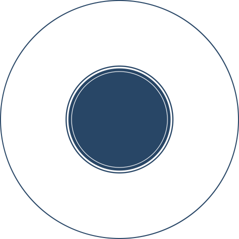

As ações do PPRA devem ser desenvolvidas com a participação da CST. De acordo com o Manual de Saúde e
Segurança do
Trabalho do Governo do Distrito Federal, devem ser considerados para a avaliação diversos riscos
ambientais.
Clique em cada risco para conhecê-lo.

Esses riscos são avaliados com medições objetivas e subjetivas, sendo caracterizados por suas naturezas,
concentrações,
quantidades ou intensidades, potenciais de danos, graduações e tempos de exposições. Também são levadas em
consideração
as características do trabalho. A validade do PPRA é de um ano.
Perceba que, enquanto o PCMSO considera as
características e a exposição aos riscos ambientais, o PPRA avalia os riscos presentes no ambiente de
trabalho.
Por
isso, é fundamental a participação da CST na avaliação realizada pelo especialista que elabora o PPRA.
Riscos físicos:
diversas formas de
energia
a que possam estar expostos os servidores, tais como ruídos, vibrações, pressões anormais, temperaturas
extremas, radiações ionizantes, radiações não ionizantes, infrassom e ultrassom.
Riscos de acidentes:
conduzir veículos,
transitar
em áreas de tráfego de veículos, eletricidade, trabalhos em altura, escavações, máquinas
sem proteção, ferramentas ou instrumentos defeituosos ou inadequados, armazenamento inadequado, arranjo
físico
inadequado, iluminação inadequada, possibilidade de incêndio e explosão, quedas em nível, animais
peçonhentos.
Riscos biológicos:
bactérias, fungos,
bacilos,
parasitas, protozoários e vírus.
Riscos químicos:
substâncias, compostos
ou
produtos que possam penetrar no organismo pela via respiratória, nas formas de poeira, fumo,
névoa, neblina, gás ou vapor, ou que, pela natureza da atividade de exposição, possam ter contato ou ser
absorvidos pelo
organismo através da pele ou por ingestão.
Riscos ergonômicos:
levantamento e
transporte
manual de peso, monotonia, repetitividade de movimentos e esforços, ritmo excessivo,
exigências, posturas inadequadas e trabalho em turnos continuados.